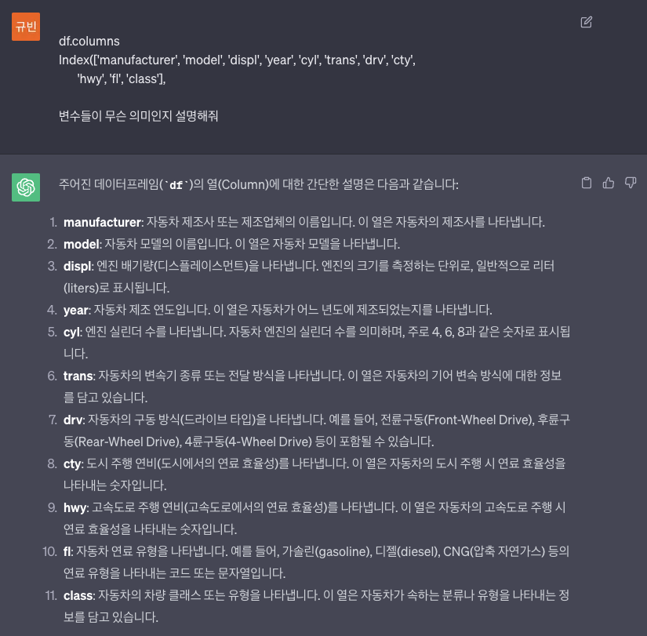
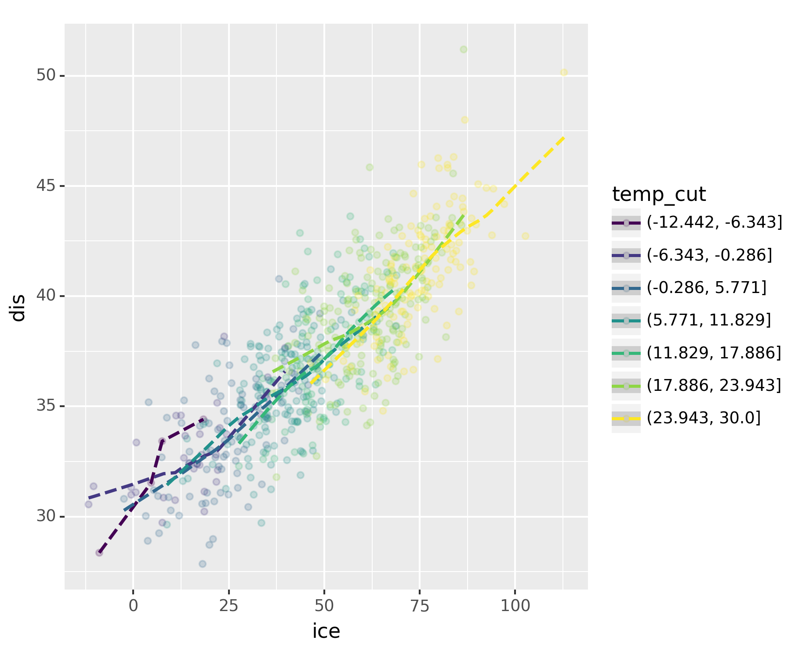

# {{<video https://youtu.be/playlist?list=PLQqh36zP38-yHabB3SMhPt0toFJTIKgPy&si=bgcDaORN0s4Hkrhv >}}03wk-1: plotnine(ggplot2), 아이스크림을 많이 먹으면 걸리는 병 (draft)
plotnine

1. 강의영상
2. Imports
# !pip install plotnine -- 설치해야해요~import numpy as np
import pandas as pd
import matplotlib.pyplot as plt
from plotnine import * import plotnineplotnine.options.dpi= 150
plotnine.options.figure_size = (6, 5) 3. mpg data
A. read data
- ref: https://r4ds.had.co.nz/index.html
df = pd.read_csv('https://raw.githubusercontent.com/guebin/DV2022/master/posts/mpg.csv')B. descriptions
- 컬럼들의 이름을 출력.
- ChatGPT에 문의

4. mpg의 시각화: 2차원
A. x=displ, y=hwy
- 예시1: 정직하게 매뉴얼대로..
- 예시2: data=와 mapping=은 생략가능하다.
B. rpy2
- 예시: R에서도 거의 똑같은 문법으로 그릴수 있음 (1타2피..)
import rpy2
%load_ext rpy2.ipython5. mpg의 시각화: 3차원
A. x=displ, y=hwy, shape=class
- 예시1
B. x=displ, y=hwy, color=class
- 예시1
C. x=displ, y=hwy, color=class, shape=class
- 예시1
- 예시2: 전체적으로 size를 크게..
- 예시3: 겹치는 부분이 있으니 좀 더 투명하게..
6. mpg의 시각화: 4차원, 5차원
A. x=displ, y=hwy, color=drv, shape=class
B. x=displ, y=hwy, color=drv, shape=class, size=cyl
7. 객체지향적 시각화
- ggplot은 정체가 뭐지?
- geom_point은 정체가 뭐지?
A. fig
B. geom_point()
C. geom_smooth()
D. geom_point() + geom_smooth()
E. geom_point() – better
F. geom_smooth() – better
G. 다양한 조합
- 예시1: fig, point, smooth
- 예시2: fig, point_better, smooth_better
- 예시3: fig, point_better, smooth_better, smooth
8. 아이스크림을 많이 먹으면 걸리는 병
A. 책 읽어보세요
- ref: https://product.kyobobook.co.kr/detail/S000000597846
- 구매할만한 책입니다.
- 수업에 필요한 내용은 여기에..
- 내용요약 - 여름 \(\to\) 수영장 \(\to\) 소아마비 - 여름 \(\to\) 아이스크림 - 아이스크림과 소아마비는 상관관계가 높다: 아이스크림 성분중에서 소아마비를 유발하는 유해물질이 있을 것이다 (?)
B. 기상자료 다운로드
- 기상자료 다운로드
temp=pd.read_csv('https://raw.githubusercontent.com/guebin/DV2022/master/posts/temp.csv').iloc[:,3].to_numpy()
#tempC. 숨은진짜상황1: 온도 \(\to\) 아이스크림 판매량
- 아래와 같은 관계를 가정하자.
\[\text{아이스크림 판매량} = 20 + 2 \times \text{온도} + \text{오차}\]
D. 숨은진짜상황2: 온도 \(\to\) 소아마비 반응수치
- 아래와 같은 관계를 가정하자.
\[\text{소아마비 반응수치} = 30 + 0.5 \times \text{온도} + \text{오차}\]
E. 우리가 관측한 상황 (온도는 은닉되어 있음)
F. 여름만 뽑아서 플랏한다면?
G. ggplot으로 온도구간을 세분화 하여 시각화하자.
- 데이터를 데이터프레임으로
- 구간별로 나눈변수를 추가
- 시각화
H. 진짜 아이스크림을 먹고 배탈이 났다면?
- 온도는 아이스크림 판매에 여전히 영향을 주지만
\[\text{아이스크림 판매량} = 20 + 2 \times \text{온도} + \text{오차}\]
np.random.seed(2)
disease = 30 + 0.5 * temp + np.random.randn(len(temp))*1- 수영장이 원인이 아니라 진짜 아이스크림을 먹고 소아마비에 걸린상황이라면?
\[\text{소아마비 반응수치} = 30 + 0.0 \times \text{온도} + 0.15 \times \text{아이스크림 판매량} + \text{오차}\]
np.random.seed(2)
disease= 30+ 0*temp + 0.15*icecream + np.random.normal(size=len(temp),scale=2)- 그림을 한번 그려보자.
df2 = pd.DataFrame({'temp':temp,'ice':icecream,'dis':disease})
df2.assign(temp_cut=pd.cut(df2.temp,bins=7))| temp | ice | dis | temp_cut | |
|---|---|---|---|---|
| 0 | -0.5 | 35.243454 | 34.453002 | (-6.343, -0.286] |
| 1 | 1.4 | 16.682436 | 32.389832 | (-0.286, 5.771] |
| 2 | 2.6 | 19.918282 | 28.715350 | (-0.286, 5.771] |
| 3 | 2.0 | 13.270314 | 35.271089 | (-0.286, 5.771] |
| 4 | 2.5 | 33.654076 | 31.461240 | (-0.286, 5.771] |
| ... | ... | ... | ... | ... |
| 651 | 19.9 | 68.839992 | 39.693811 | (17.886, 23.943] |
| 652 | 20.4 | 76.554679 | 38.924088 | (17.886, 23.943] |
| 653 | 18.3 | 68.666079 | 41.765212 | (17.886, 23.943] |
| 654 | 12.8 | 42.771364 | 36.842022 | (11.829, 17.886] |
| 655 | 6.7 | 30.736731 | 37.715537 | (5.771, 11.829] |
656 rows × 4 columns
fig = ggplot(df2.assign(temp_cut = pd.cut(df2.temp,bins=7)))
point = geom_point(aes(x='ice',y='dis',color='temp_cut'),alpha=0.2)
smooth = geom_smooth(aes(x='ice',y='dis',color='temp_cut'),linetype='dashed')
fig + point + smooth/home/cgb2/anaconda3/envs/r/lib/python3.11/site-packages/plotnine/stats/smoothers.py:330: PlotnineWarning: Confidence intervals are not yet implemented for lowess smoothings.
/home/cgb2/anaconda3/envs/r/lib/python3.11/site-packages/plotnine/stats/smoothers.py:330: PlotnineWarning: Confidence intervals are not yet implemented for lowess smoothings.
/home/cgb2/anaconda3/envs/r/lib/python3.11/site-packages/plotnine/stats/smoothers.py:330: PlotnineWarning: Confidence intervals are not yet implemented for lowess smoothings.
/home/cgb2/anaconda3/envs/r/lib/python3.11/site-packages/plotnine/stats/smoothers.py:330: PlotnineWarning: Confidence intervals are not yet implemented for lowess smoothings.
/home/cgb2/anaconda3/envs/r/lib/python3.11/site-packages/plotnine/stats/smoothers.py:330: PlotnineWarning: Confidence intervals are not yet implemented for lowess smoothings.
/home/cgb2/anaconda3/envs/r/lib/python3.11/site-packages/plotnine/stats/smoothers.py:330: PlotnineWarning: Confidence intervals are not yet implemented for lowess smoothings.
/home/cgb2/anaconda3/envs/r/lib/python3.11/site-packages/plotnine/stats/smoothers.py:330: PlotnineWarning: Confidence intervals are not yet implemented for lowess smoothings.
<Figure Size: (900 x 750)>I. 해석
- 해피앤딩: 아이스크림 먹어도 소아마비 안걸려!
- 아이스크림을 먹으면 소아마비를 유발한다는 이상한 결론이 나올뻔 했음.
- 하지만 우리는 온도라는 흑막1을 잘 찾았고 결과적으로 “온도->아이스크림판매량,소아마비” 이라는 합리적인 진리를 얻을 수 있었다.
1 우리는 이것을 “은닉변수”라고 부르기로 했어요
- 걱정: 또 다른 흑막?
- 고려할 흑막이 온도뿐이라는 보장이 어디있지?
- 사실 흑막2, 흑막3이 있어서 그런 흑막들을 고려하다보니까 아이스크림과 소아마비사이의 상관관계가 다시 보인다면?
- 이론:
- 이론적으로는 “세상의 모든 은닉변수를 통제하였을 경우에도 corr(X,Y)의 값이 1에 가깝다면 그때는 인과성이 있음” 이라고 주장할 수 있다.2
- 즉 모든 흑막을 제거한다면 “상관성=인과성”이다.
2 물론 이 경우에도 무엇이 원인인지는 통계적으로 따지는 것은 불가
- 회의론:
- 세상의 모든 흑막을 제거하는건 사실상 불가능하지 않나?
- 두 가지 연구흐름
- 실험계획법: 실험계획을 잘하면 흑막을 제거한 효과가 있음.3
- 인과추론: 실험계획이 사실상 불가능한 경우가 있음 \(\to\) 모인 데이터에서 최대한 흑막2,3,4,.. 등이 비슷한 그룹끼리 “매칭”을 시킨다!
3 무작위로 사람뽑아서 담배를 피우게 한다든가